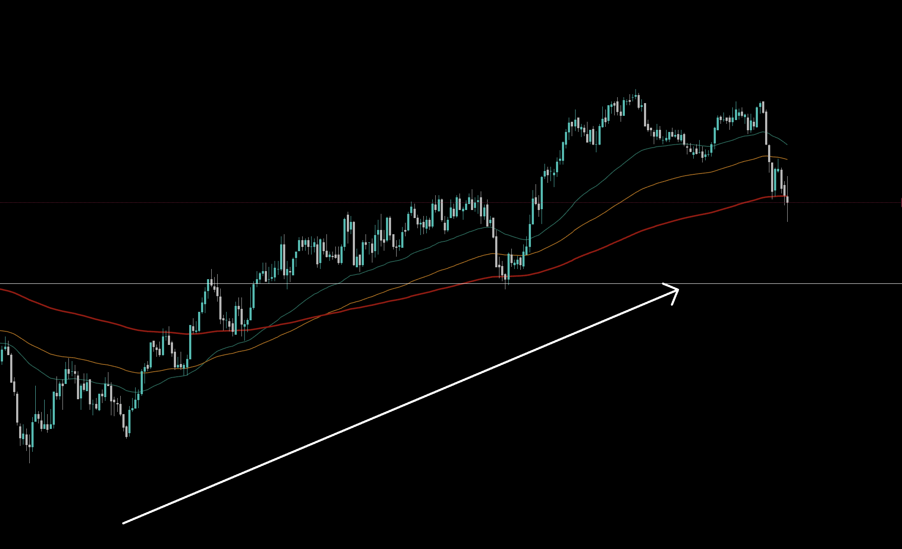
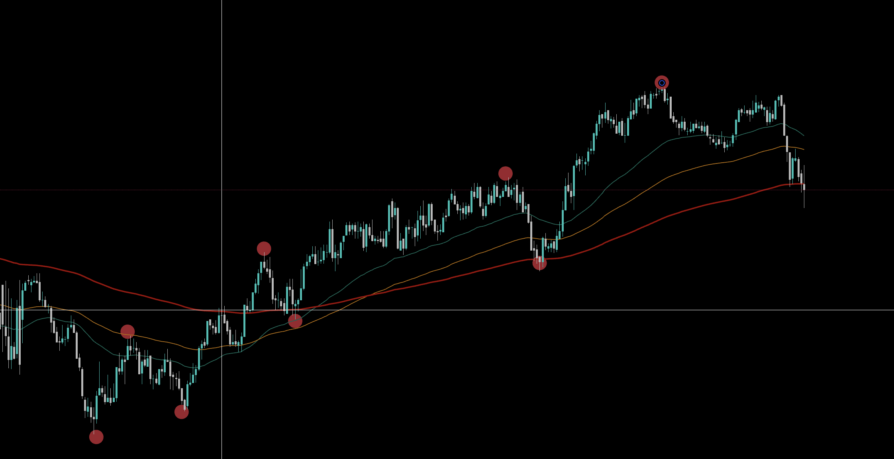
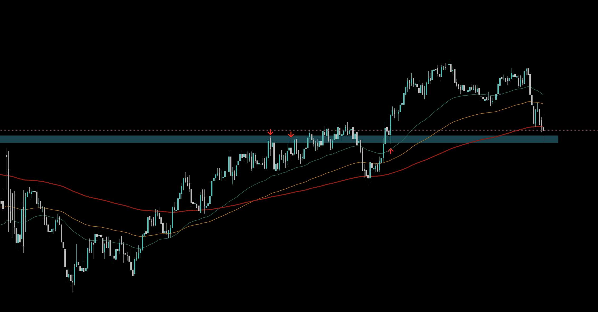
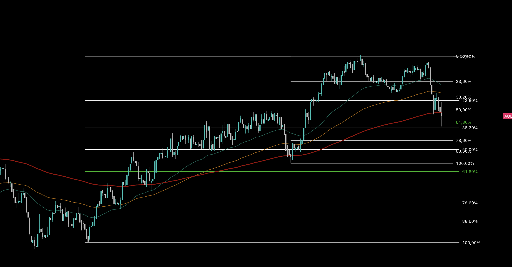
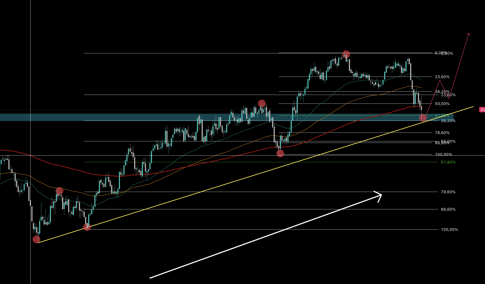

Estrategia de Trading
1. TENDENCIA
Se debe identificar la direccion del mercado en 5 minutos en un panorama general.
2. ESTRUCTURA
Se debe identificar la estructura de los ultimos impulsos.
3. SOPORTE Y RESISTENCIAS (DINAMICAS O FIJAS)
Se debe identificar soporte o resistencia relevantes donde tenga mas de un toque del precio. Este puede ser fijo o dinamicos como las EMA.
4. LOS INDICADORES EMA O STOCASTICO
- Cuando el estocastico esta sobrevendido (mayor a 85%) o sobrecomprado(menor a 15%) con configuracion (5-3-3).
- Cuando hay un toque en la EMA sirve como soporte o resistencia dinamica. La EMA de 200 periodos tiene mas relevancia que la de 100 periodos y a su vez esta mas relevancia que la de 50 periodos.
5. ACCION DE PRECIO
El precio debe estar en un punto de entrada que coincida con un nivel fibonacci, bien sea de retroceso o extension de fibonacci. los niveles mas relevantes son 61,8% o 50% o 78,6%.
Ideal trazar varios fibonacci y poder encontrar confluencia de los niveles en un mismo punto.
CONFLUENCIA
REGLAS DE ENTRADA
- SIEMPRE OPERAR A FAVOR DE LA TENDENCIA
- SIEMPRE EN TIME FRAME 5 MINUTOS Y EXPIRACION DE 5 MINUTOS
- NO OPERAR MAS DE 2 ENTRADAS POR PARIDADES EN MISMA SESION
- NO OPERAR MAS DE 5 ENTRADAS
- ENTRADA SOLO CUANDO SE CUMPLA POR LO MENOS 4 DE ESTOS 5 PUNTOS
- OPERAR 1% AL 2% POR OPERACION